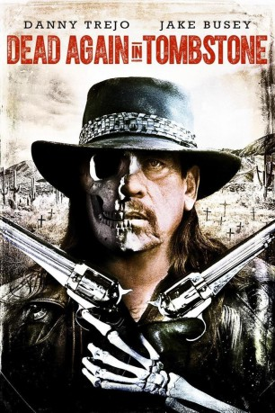

#7104 Dead in Tombstone 2
 
 IMDB-Wertung: 4.2 / 10
IMDB-Wertung: 4.2 / 10  Metascore: 0
Metascore: 0 
Guerrero (Danny Trejo) ist zurück. Erneut auferstanden von den Toten, zwingt ihn sein Fluch ein weiteres Mal, im Namen des Teufels auszureiten. Der grimmige Outlaw muss ein wichtiges, gestohlenes Artefakt vor den gierigen Händen der Soldatengang um Jackson Boomer (Jake Busey) bewahren, der vor nichts zurückschreckt, um seine gefallenen Kameraden aus ihren Gräbern zurückzuholen und den Zorn der Hölle über die Welt zu bringen. Guerrero bleibt nichts anderes übrig, als all seine dunklen Kräfte auf seinem blutigen Feldzug einzusetzen. Nur so kann er Jackson besiegen und endlich Erlösung finden.
Jahr: 2017
Dauer: 99 Minuten
FSK: 16
Land: USA Studio: UPHETonspuren: DTS - ,
Untertitel: Deutsch, Englisch,
Auflösung: 1080p (1920x1080) Größe: 8878 MB
Genre: Western
Regisseur: Roel Reiné
Drehbuch: Roel Reiné
Soundtrack:
Darsteller:
 Danny Trejo als Guerrero
Danny Trejo als Guerrero- Elysia Rotaru als Alicia
 Jake Busey als Colonel Jackson Boomer
Jake Busey als Colonel Jackson Boomer- Leslie Hucul als Townfolk
- Chad Stanley Martin als Fighting Townsfolk
- Dean McDermott als Dr. Goldsworthy
- Elizabeth Lavender als Madame Du Vere
- Nathaniel Arcand als Bull Dog
- Michelle Rios als Zerelda De La Cruz
- Bud Klasky als Lawyer
- Dan McDougall als Bob
- Dave Burchill als Denizen
- Joe Norman Shaw als Sheriff Judkins
- Peter Skagen als Mr. Cravens
- John Tierney als Jeremiah
- Jason Long als Squeeze Benteen
- Gerrick Winston als Cowboy Boss
- Colin A. Campbell als Boomer Brothel
- Bernadette Janssen als Saloon Girl , uncredited
- Marnie Madden als Townsfolk , uncredited
- Daryl King als Boots Benteen
- Gwyn Auger als Brothel Girl , uncredited
Datei: X:\HD-Western-Collections\Dead in Tombstone\Dead in Tombstone 2 (2017, FSK16, 1920x1080).mkv seit 26.09.2017
Festplatte: HD Eastern+Western
 Alle Filme aus Gruppe 'HD-Western-Collections\Dead in Tombstone'
Alle Filme aus Gruppe 'HD-Western-Collections\Dead in Tombstone'